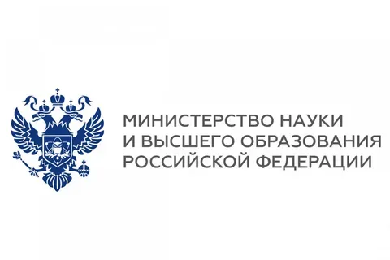
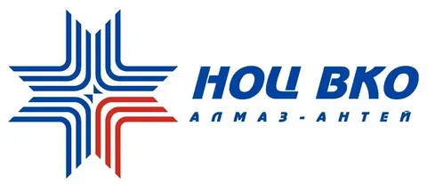
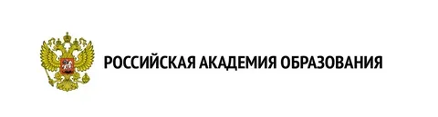
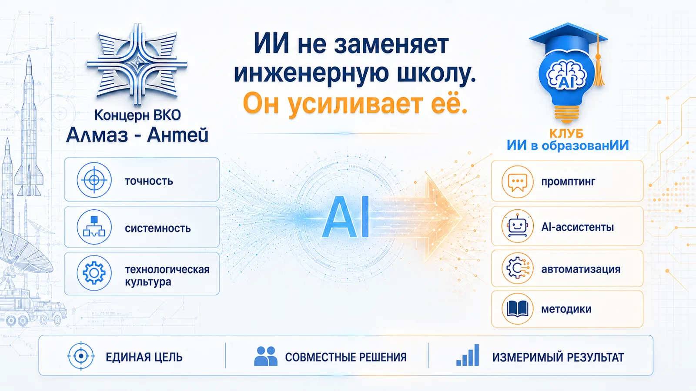
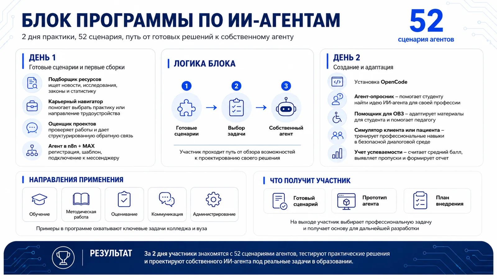

Минобрнауки России
Доклад о влиянии преподавательских сообществ на приобретение цифровых компетенций.

Исследователь, предприниматель, эксперт по внедрению искусственного интеллекта в образование и бизнес, сооснователь Клуба «ИИ в образованИИ» и руководитель Агентства Новых Перспектив.
Спикер научно-практических конференций, участник федеральных образовательных инициатив, работает с вузами и образовательными организациями федерального уровня, специализируется на развитии цифровых компетенций и трансформации процессов с помощью ИИ.



Доклад о влиянии преподавательских сообществ на приобретение цифровых компетенций.

X Конференция «Информационная безопасность и дети».


«Преподавательские сообщества как устойчивая среда для развития цифровых компетенций».

Рубрика «Интеллектуальный капитал», тема: ИИ-инструменты для научных исследований.
Эксперты Клуба «ИИ в образованИИ» проводят практическое обучение по применению искусственного интеллекта для сотрудников предприятий АО «Концерн ВКО „Алмаз-Антей“».
Программы строятся на реальных рабочих задачах и включают аналитику, подготовку документов, автоматизацию рутины и безопасное применение ИИ.
Сейчас мы проводим 6 программ ДПО для сотрудников концерна.
Мы не просто рассказываем о нейросетях — мы помогаем внедрять их в рабочие процессы.


Напишите в Telegram — расскажем о программах, подберём формат под задачи вашей команды.
Связаться со мной · @smitAninТакже на связи в MAX